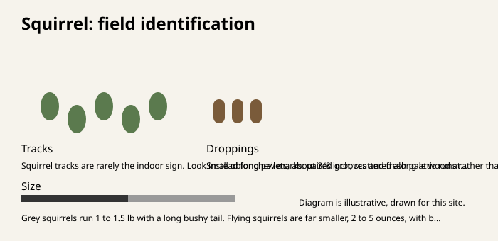
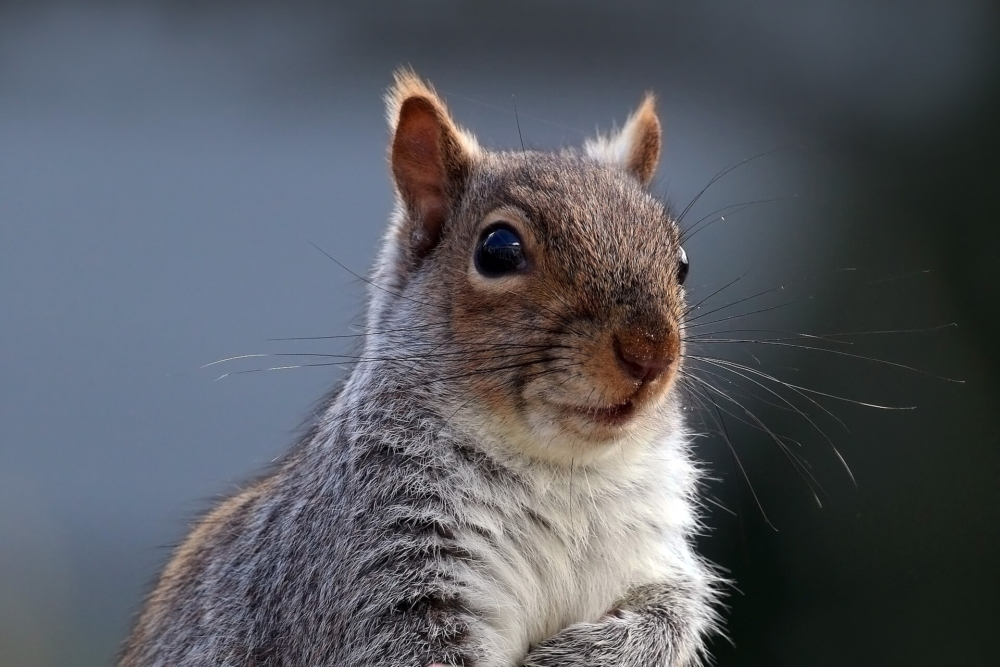

Animal guide - upstate New York
Squirrel Removal in Upstate NY
Squirrels announce themselves on a day schedule: scampering at sunrise, quiet at midday, busy again before dark. Grey squirrels chew in through fascia and gable vents. Flying squirrels, smaller and nocturnal, slip through gaps you would swear were sealed. Both treat a warm attic as a nursery, and both gnaw constantly, which is where the real risk sits. This page covers identification, the wiring problem, New York seasons and law, humane eviction, and honest costs.
What are the signs of a squirrel problem?
- Scratching, scampering and rolling sounds in the morning and late afternoon
- Light pitter-patter and thumps after dark in winter, a flying squirrel sign
- Chewed holes at fascia, soffit corners or gable vents, with fresh wood shavings below
- Acorns, nuts and nesting material gathered in attic corners
- Small pellet droppings along attic runs and near entry points
- Flickering lights or a chewed-wire smell, which means stop and get the attic checked


Squirrel tracks are rarely the indoor sign. Look instead for chew marks: paired grooves and fresh pale wood at a hole edge about 2 inches across. Small oblong pellets, about 3/8 inch, scattered along attic runs rather than piled in one latrine spot. Grey squirrels run 1 to 1.5 lb with a long bushy tail. Flying squirrels are far smaller, 2 to 5 ounces, with big eyes and a gliding membrane.
What damage do squirrels do inside a home?
The squirrel damage that matters is electrical. Squirrels must gnaw to wear down teeth that never stop growing, and wire insulation in an attic is a favoured target. Stripped conductors arc, overheat and start fires inside walls and insulation, a risk insurers and fire investigators know well. Beyond wiring, squirrels shred insulation into nests, soil it with droppings and urine, chew fascia and vents wider each season, and occasionally fall into wall voids and die there. An early eviction is cheap. A wiring repair plus insulation job is not.
How do squirrels behave through the New York year?
Grey squirrels are daytime animals with two activity peaks, morning and late afternoon, and they raise two litters a year in New York, roughly December to February and May to June. Flying squirrels are nocturnal, communal, and far more common in upstate attics than most homeowners realise: a winter colony can hold a dozen animals sharing body heat. Both species remember good den sites and return, and both can jump 8 to 10 feet from a branch to a roof, which is why tree clearance is part of any real fix.
New York squirrel work follows the litters. Winter brings the December to February litter and, for flying squirrels, peak communal denning in attics, so noises at night in January usually mean flyers. Spring and early summer bring the May to June litter, and evictions slow down for young checks. Fall is the sealing season, the best time to close a house before the October to March cold-weather entry push. If you only do one preventive job a year, do it in September or October.


Are squirrels a health risk to my family or pets?
Squirrels are not a rabies vector species and rarely bite unless cornered, so the health picture is calmer than with raccoons or bats. The risks are secondary: droppings and urine soiling insulation, fleas and mites that leave a nest and look for a new host when the squirrels are evicted, and the occasional carcass in a wall void bringing flies and odour. The dominant safety issue stays the wiring. Any sign of chewed conductors means an electrician checks the circuit, not just an operator sealing the hole.
What does New York law say about squirrel removal?
Squirrels are regulated game and wildlife in New York, and nuisance removal runs through DEC-licensed operators, who can take problem squirrels in and around buildings under their licence conditions. Homeowner trapping and relocating squirrels raises the same legal and survival problems as with other wildlife, plus a practical one: an unsealed house in squirrel habitat refills within weeks. The licence matters for method as much as legality. Eviction doors, young checks and chew-proof sealing are the professional standard, not poison or indiscriminate trapping.
Can I handle squirrel removal myself?
Prevention is good DIY: cut branches back 8 to 10 feet from the roof, take down feeders near the house during a problem, and keep firewood away from walls. Eviction is not. The classic mistake is patching the hole while squirrels are inside or while young are in the nest, which leads to animals dying in walls or chewing out through a new, worse hole, sometimes into the living space. Repellent sprays and mothballs do not move squirrels. A one-way door fitted at the right hole, after a young check, does.
One last thing on choosing help. Get the inspection findings in writing, with photographs of each entry point, and get removal, sealing and cleanup as separate lines on the estimate. Ask what material closes each hole, because foam and caulk alone are not exclusion. And ask the season question out loud: if the timing is wrong for this species, an honest operator will tell you to wait, and offer the inspection and quote now so the work is ready the week the window opens.
How does humane squirrel removal work, step by step?

Inspect and identify the species
Grey and flying squirrels need different handling, so the inspection identifies which animal, where it enters, and whether young are in the nest. Entry holes, chew marks, droppings and attic runs are photographed, and the wiring gets a visual check at the same visit.
Check for young and time the eviction
During litter seasons the nest is checked before any door is fitted. If young are too small to move, the eviction waits or uses a reunion approach, because sealing a mother out sends her through the roof somewhere else, and young left inside die in the walls.
Fit one-way doors at the entry points
A one-way door at the main entry lets squirrels out and not back in, while secondary holes are sealed first. Flying squirrel work uses smaller-gauge fittings and a finer gap survey, because they pass through openings a grey squirrel never could.
Seal with chew-proof material and repair
Entries are closed with galvanised steel, metal flashing and hardware cloth, never foam or caulk alone, which squirrels chew through in a night. Damaged fascia is repaired, nests and soiled insulation are removed, and suspect wiring is flagged for an electrician.
In the local data
Squirrels dominate the local mammal records: 3,377 research-grade iNaturalist observations across the 4 squirrel species recorded in the ten town areas: eastern gray squirrel (2,466), american red squirrel (855), southern flying squirrel (46) and northern flying squirrel (10). Squirrels were recorded in all 10 of the 10 town areas.
Data: iNaturalist, 25 km radius per town, fetched November 2026.
How much does squirrel removal cost?
| Service | Typical range | Notes |
|---|---|---|
| Inspection and entry-point survey | $150-$300 | Often credited toward the work when you proceed. |
| Single-animal humane removal | $300-$600 | One animal, one entry point, straightforward access. |
| Bat exclusion, full home | $800-$2,500 | Colony work: one-way valves, full seal, guano check. |
| Attic cleanup and disinfection | Quoted after inspection | Depends on droppings volume and insulation condition. |
A single grey squirrel eviction with one entry sealed is a standard single-animal job. Flying squirrel colonies cost more, because the gap survey and sealing have to cover the whole roofline at a finer standard, and any wiring repair is an electrician's separate quote.
These are typical market ranges for upstate New York, published so you can sanity-check any quote. They are not a quote for your home: access, entry count, young in the den and cleanup volume move the real number, which is why the inspection comes first and the estimate is written.
Squirrel removal in your town
The method on this page is state-wide, but the animal pressure, housing stock and season are local. These town pages combine the squirrel method with each town's housing, waterways and cost notes, including sub-services like attic, chimney and under-deck work, babies, damage repair and emergencies.
Ithaca Binghamton Poughkeepsie Kingston Newburgh Utica Saratoga Springs Watertown Auburn Elmira
Squirrel removal questions, answered
Will squirrels leave the attic on their own?
Sometimes in spring, rarely for good. A mother may move young to a leaf nest in summer, but the attic stays on her map, and the same hole draws her or another squirrel back for the winter litter. Squirrels are strongly site-loyal, and an unsealed entry in good habitat is an open listing. Eviction plus chew-proof sealing is what actually ends the cycle, rather than pausing it.
How long does it take to get squirrels out of an attic?
Most grey squirrel evictions clear in two to four days once a one-way door is fitted, because the animals leave daily to feed. Flying squirrel colonies take longer, often a week or more, since every animal must exit through the valves and the finer gaps all have to be found. Litter season can add a wait: if young are not yet mobile, the eviction is timed around them rather than rushed.
How small a hole can a squirrel get through?
A grey squirrel needs about 1.5 to 2 inches, roughly the size of a golf ball, and will chew a smaller gap up to size in a night. A flying squirrel needs far less, around 1 inch, and young greys can pass through gaps that look impossibly small. This is why sealing uses steel and hardware cloth, and why a survey that only covers the obvious hole fails within a season.
Does animal control remove squirrels from attics?
Generally no. Municipal animal control in New York towns handles dogs and immediate public-safety calls, not wildlife inside private homes. Attic squirrel work belongs to DEC-licensed Nuisance Wildlife Control Operators, who carry the licence, the eviction equipment and the liability cover for roof work. If a town office gives you a list, it will be a list of those same licensed operators.
I hear scratching early in the morning. Is it always squirrels?
Morning scratching is the classic grey squirrel pattern, since they wake and leave at dawn. But timing separates the suspects: noises that start after dark in winter point to flying squirrels or mice, heavy night thumping points to a raccoon, and dawn-and-dusk fluttering near the roofline can be bats. An inspection reads the droppings, chew marks and entry holes and settles it, instead of treating the wrong animal.
Can squirrels really cause a house fire?
Yes, and it is the main reason not to live with them. Squirrels gnaw constantly to wear their teeth, and stripped wire insulation lets conductors arc against wood and insulation. Attic fires traced to rodent and squirrel gnawing are a known category for fire investigators. The eviction should always include a look at wiring along the animals' runs, and any chewed conductor needs an electrician, not just a patch.
Do you use poison for squirrels in the attic or around the home?
No. Poison is not part of humane squirrel work on this site, and for good reason. A poisoned animal usually dies somewhere unreachable, in a wall, a flue or under a floor, and the entry point stays open for the next animal anyway. Eviction, one-way doors where they fit, live capture where they do not, and then sealing solves the problem at the structure, which is where it actually lives.
Will you seal the entry points, or just remove the animal?
Sealing is the point of the job, and any quote that only covers removal is half a quote. The process here runs in order: inspect and map every entry, evict or capture the squirrels, confirm the space is empty, then close each opening with materials the animal cannot chew, dig or pry through. Removal without exclusion is a short rental of an empty attic, and the next tenant rarely waits a full season to move in.
Are wildlife removal operators licensed and insured in New York?
They should be, and you can check before anyone climbs your roof. Nuisance Wildlife Control Operators in New York work under a NYS DEC licence, carry insurance for roof and attic work, and should give you the licence details on request. The checklist is simple: licence, insurance, a written estimate with line items, and a method that starts with inspection and ends with sealing. An operator who cannot produce the first two has not earned the job.
How fast can a wildlife technician get to my home?
Response time depends on where in upstate New York you are and what the squirrel is doing. An animal in the living space, a chimney or a wall void is treated as urgent and usually gets a same-day or next-day response across the towns this site covers. Attic evictions and barrier work are booked as inspections first, normally within a few days, and the written quote follows the inspection, not a guess over the phone.
How much does squirrel removal cost in upstate New York?
The canonical bands on this site apply to every town: inspections run $150 to $300 and are often credited toward the work, a single-animal humane removal is typically $300 to $600, full bat exclusion runs $800 to $2,500, and attic cleanup is quoted after inspection because it depends on what the animals left behind. A single grey squirrel eviction with one entry sealed is a standard single-animal job. Flying squirrel colonies cost more, because the gap survey and sealing have to cover the whole roofline at a finer standard, and any wiring repair is an electrician's separate quote.